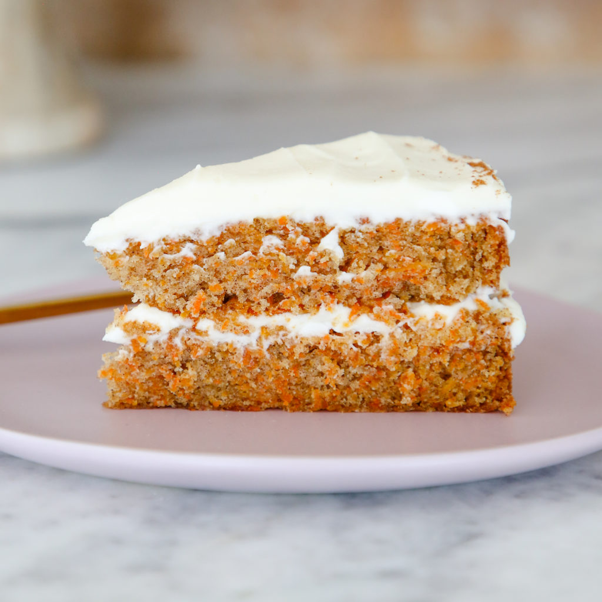

Carrot Cake

Description
A moist and flavorful recipe that makes a large quantity of cake. I have been hounded to make this cake time and time again.
Ingredients
- 6 cups grated carrots
- 1 cup brown sugar
- 1 cup raisins
- 4 eggs
- 1 ½ cups white sugar
- 1 cup vegetable oil
- 2 teaspoons vanilla extract
- 1 cup crushed pineapple, drained
- 3 cups all-purpose flour
- 1 ½ teaspoons baking soda
- 1 teaspoon salt
- 4 teaspoons ground cinnamon
- 1 cup chopped walnuts
Steps
- In a medium bowl, combine grated carrots and brown sugar. Set aside for 60 minutes, then stir in raisins.
- Preheat oven to 350 degrees F (175 degrees C). Grease and flour two 10 inch cake pans.
- In a large bowl, beat eggs until light. Gradually beat in the white sugar, oil and vanilla. Stir in the pineapple. Combine the flour, baking soda, salt and cinnamon, stir into the wet mixture until absorbed. Finally stir in the carrot mixture and the walnuts. Pour evenly into the prepared pans.
- Bake for 45 to 50 minutes in the preheated oven, until cake tests done with a toothpick. Cool for 10 minutes before removing from pan. When completely cooled, frost with cream cheese frosting.